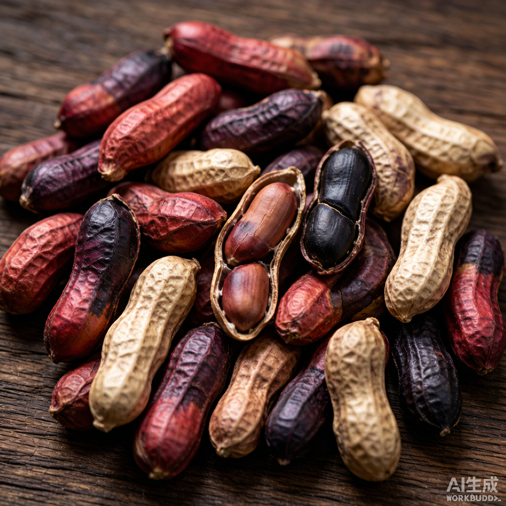

科技植保 · 全生育期呵护 · 一亩一方案，从土壤到荚果的精准管理
本方案由「底肥、叶面喷雾、灌根营养」三大模块构成，覆盖从播种前土壤处理到收获前的全生育期，形成立体化植保与营养管理网络。

七彩花生（又称七彩野地花生）种皮天然呈现红、紫、黑、赭、米白等多种色泽，富含花青素、白藜芦醇与不饱和脂肪酸，是高端食用与礼品市场的特色品种。
因其种皮薄、风味足、商品价值高，对土壤健康、病害防控与荚果饱满度的要求更为严苛——这正是本全程方案设计的出发点。
三大模块合计亩建议零售价 ¥1600。灌根营养占比最高，凸显七彩花生对根系健康与荚果品质的依赖；叶面与底肥协同保障植株健壮。
从播种前土壤处理到播后 100 天的收获前管理，三大模块按生育节点精准衔接。
以下为各模块按生育期排列的农资组合、防治靶标与用量。各模块仅列汇总报价，不再展示逐条明细。
| 作物生长期 | 农资产品 | 防治靶标 | 用量 | 使用方法 | 技术要领 | 注意事项 |
|---|---|---|---|---|---|---|
| 播种前土壤处理 | 生石灰 | 土壤消毒 | 50–80 kg/亩 | 撒施 | 均匀撒施 | 与底肥使用时间间隔最少 7 天 |
| 底肥方案 | 友擎有机肥 | 产量 | 80 kg/亩 | 撒施 | 覆土、均匀分布 10–30 厘米 | 尽量不要裸露在土壤表面 |
| 底肥方案 | 高富专（13-17-15） | 产量、黄曲霉毒素 | 40 kg/亩 | 撒施 | 覆土、均匀分布 10–30 厘米 | 不能直接接触作物根系 |
| 底肥方案 | 地腾（0.8%精甲·嘧菌酯） | 茎基腐、生根 | 5 kg/亩 | 撒施 | 覆土、均匀分布 10–30 厘米 | 不能直接接触作物根系 |
| 底肥方案 亩汇总合计 | ¥600 | |||||
| 作物生长期 | 农资产品 | 防治靶标 | 用量 | 使用方法 | 技术要领 | 注意事项 |
|---|---|---|---|---|---|---|
| ▶ 播后苗前 | ||||||
| 播后苗前 | 960克/升精异丙甲草胺 | 尖叶草封闭 | 50–100 ml/亩 | 喷雾 | 播后 3 天内使用，墒情适中 | 均匀喷雾 |
| 播后苗前 | 84%双氯磺草胺 | 阔叶草封闭 | 3–4 g/亩 | 喷雾 | 播后 3 天内使用，墒情适中 | 均匀喷雾 |
| ▶ 苗后除草 | ||||||
| 苗后除草 | 烯草酮 | 尖叶草 | 50 ml/亩 | 喷雾 | — | — |
| 苗后除草 | 84%双氯磺草胺 | 阔叶草封闭 | 2 g/亩 | 喷雾 | — | 均匀喷雾 |
| ▶ 播后 15–20 天 | ||||||
| 播后15-20天 | 锐动（200g/L氯虫苯甲酰胺） | 控虫 | 30 g/亩 | 喷雾 | — | — |
| 播后15-20天 | 铜拳（16%甲维盐·茚虫威） | 杀虫 | 30 g/亩 | 喷雾 | — | — |
| 播后15-20天 | 24%虫螨腈·虱螨脲 | 杀虫 | 30 g/亩 | 喷雾 | — | — |
| 播后15-20天 | 腾丰（28%环丙唑醇·嘧菌酯） | 控旺、防病、矮节 | 30 g/亩 | 喷雾 | — | — |
| 播后15-20天 | 美得乐（80%克菌丹） | 叶斑类病害、锈病 | 30 g/亩 | 喷雾 | — | — |
| 播后15-20天 | 微量元素聚合磷飞防助剂 | 营养、抗絮凝 | 100 g/亩 | 喷雾 | — | — |
| 播后15-20天 | 硼钼 | 营养 | 100 g/亩 | 喷雾 | — | — |
| 播后15-20天 | 小胖子（27.5%胺鲜酯·甲哌鎓） | 控旺 | 50 g/亩 | 喷雾 | — | — |
| ▶ 播后 25–30 天（50% 开花） | ||||||
| 播后25-30天 | 秀艳（32%苯甲·肟菌酯） | 矮节、叶片增厚 | 30 g/亩 | 喷雾 | — | — |
| 播后25-30天 | 24%虫螨腈·虱螨脲 | 杀虫 | 50 g/亩 | 喷雾 | — | — |
| 播后25-30天 | 铜拳（16%甲维盐·茚虫威） | 杀虫 | 30 g/亩 | 喷雾 | — | — |
| 播后25-30天 | 锐动（200g/L氯虫苯甲酰胺） | 控虫 | 30 g/亩 | 喷雾 | — | — |
| 播后25-30天 | 适大进（15%调环酸钙） | 控旺 | 20 g/亩 | 喷雾 | — | — |
| 播后25-30天 | 磷酸二氢钾（洋丰） | 营养、控旺 | 100 g/亩 | 喷雾 | — | — |
| 播后25-30天 | 微量元素聚合磷飞防助剂 | 营养、抗絮凝 | 100 g/亩 | 喷雾 | — | — |
| 播后25-30天 | 硼钼 | 营养 | 100 g/亩 | 喷雾 | — | — |
| ▶ 播后 35–40 天左右 | ||||||
| 播后35-40天 | 铜拳（16%甲维盐·茚虫威） | 杀虫 | 30 g/亩 | 喷雾 | — | — |
| 播后35-40天 | 锐动（200g/L氯虫苯甲酰胺） | 控虫 | 30 g/亩 | 喷雾 | — | — |
| 播后35-40天 | 美得乐（80%克菌丹） | 叶斑类病害、锈病 | 30 g/亩 | 喷雾 | — | — |
| 播后35-40天 | 秀艳（32%苯甲·肟菌酯） | 矮节、叶片增厚 | 30 g/亩 | 喷雾 | — | — |
| 播后35-40天 | 适大进（15%调环酸钙） | 控旺 | 30 g/亩 | 喷雾 | — | — |
| 播后35-40天 | 微量元素聚合磷飞防助剂 | 营养、抗絮凝 | 100 g/亩 | 喷雾 | — | — |
| 播后35-40天 | 磷酸二氢钾（洋丰） | 营养、控旺 | 100 g/亩 | 喷雾 | — | — |
| 播后35-40天 | 硼钼 | 营养 | 100 g/亩 | 喷雾 | — | — |
| ▶ 播后 55–60 天左右 | ||||||
| 播后55-60天 | 秀艳（32%苯甲·肟菌酯） | 矮节、叶片增厚 | 30 g/亩 | 喷雾 | — | — |
| 播后55-60天 | 美得乐（80%克菌丹） | 叶斑类病害、锈病 | 30 g/亩 | 喷雾 | — | — |
| 播后55-60天 | 24%虫螨腈·虱螨脲 | 杀虫 | 50 g/亩 | 喷雾 | — | — |
| 播后55-60天 | 铜拳（16%甲维盐·茚虫威） | 杀虫 | 30 g/亩 | 喷雾 | — | — |
| 播后55-60天 | 锐动（200g/L氯虫苯甲酰胺） | 控虫 | 30 g/亩 | 喷雾 | — | — |
| 播后55-60天 | 妥控（15%烯效唑·调环酸钙） | 控旺 | 30 g/亩 | 喷雾 | — | — |
| 播后55-60天 | 微量元素聚合磷飞防助剂 | 营养、抗絮凝 | 100 g/亩 | 喷雾 | — | — |
| 播后55-60天 | 磷酸二氢钾（洋丰） | 营养、控旺 | 100 g/亩 | 喷雾 | — | — |
| 播后55-60天 | 硼钼 | 营养 | 100 g/亩 | 喷雾 | — | — |
| 播后55-60天 | 金收（5%胺鲜酯） | 营养、增产 | 50 g/亩 | 喷雾 | — | — |
| 播后55-60天 | 拜亩乐（28%啶氧菌酯·环丙唑醇） | 增产、防病 | 30 g/亩 | 喷雾 | — | — |
| ▶ 播后 75–80 天左右 | ||||||
| 播后75-80天 | 锐动（200g/L氯虫苯甲酰胺） | 控虫 | 30 g/亩 | 喷雾 | — | — |
| 播后75-80天 | 24%虫螨腈·虱螨脲 | 杀虫 | 50 g/亩 | 喷雾 | — | — |
| 播后75-80天 | 铜拳（16%甲维盐·茚虫威） | 杀虫 | 30 g/亩 | 喷雾 | — | — |
| 播后75-80天 | 适大进（15%调环酸钙） | 控旺 | 30 g/亩 | 喷雾 | — | — |
| 播后75-80天 | 微量元素聚合磷飞防助剂 | 营养、抗絮凝 | 100 g/亩 | 喷雾 | — | — |
| 播后75-80天 | 磷酸二氢钾（洋丰） | 营养、控旺 | 100 g/亩 | 喷雾 | — | — |
| 播后75-80天 | 金收（5%胺鲜酯） | 营养、增产 | 50 g/亩 | 喷雾 | — | — |
| 播后75-80天 | 美得乐（80%克菌丹） | 叶斑类病害、锈病 | 50 g/亩 | 喷雾 | — | — |
| 播后75-80天 | 硼钼 | 营养 | 100 g/亩 | 喷雾 | — | — |
| 播后75-80天 | 拜亩乐（28%啶氧菌酯·环丙唑醇） | 增产、防病 | 30 g/亩 | 喷雾 | — | — |
| ▶ 播后 100 天左右 | ||||||
| 播后100天 | 24%虫螨腈·虱螨脲 | 杀虫 | 50 g/亩 | 喷雾 | — | — |
| 播后100天 | 铜拳（16%甲维盐·茚虫威） | 杀虫 | 30 g/亩 | 喷雾 | — | — |
| 播后100天 | 锐动（200g/L氯虫苯甲酰胺） | 控虫 | 30 g/亩 | 喷雾 | — | — |
| 播后100天 | 微量元素聚合磷飞防助剂 | 营养、抗絮凝 | 100 g/亩 | 喷雾 | — | — |
| 播后100天 | 磷酸二氢钾（洋丰） | 营养、控旺 | 100 g/亩 | 喷雾 | — | — |
| 播后100天 | 硼钼 | 营养 | 100 g/亩 | 喷雾 | — | — |
| 播后100天 | 美得乐（80%克菌丹） | 叶斑类病害、锈病 | 50 g/亩 | 喷雾 | — | — |
| 播后100天 | 金收（5%胺鲜酯） | 营养、增产 | 50 g/亩 | 喷雾 | — | — |
| 播后100天 | 拜亩乐（28%啶氧菌酯·环丙唑醇） | 增产、防病 | 30 g/亩 | 喷雾 | — | — |
| 叶面喷雾植保方案 亩汇总合计 | ¥360 | |||||
| 作物生长期 | 农资产品 | 防治靶标 | 用量 | 使用方法 | 技术要领 | 注意事项 |
|---|---|---|---|---|---|---|
| ▶ 播后 15–20 天 | ||||||
| 播后15-20天 | 根际香土（虾肽、寡糖、虾红素） | 氨基酸、促根、线虫 | 2 kg/亩 | 灌根 | — | — |
| 播后15-20天 | 削线 | 线虫 | 1 kg/亩 | 灌根 | — | — |
| ▶ 播后 25–30 天（50% 开花） | ||||||
| 播后25-30天 | 根际香土（虾肽、寡糖、虾红素） | 氨基酸、促根、线虫 | 2 kg/亩 | 灌根 | — | — |
| 播后25-30天 | 剿灭（12%高氯氟·噻虫胺） | 地下害虫 | 500 ml/亩 | 灌根 | — | — |
| 播后25-30天 | 苗乐乐（11%噻呋酰胺·嘧菌酯·寡糖） | 根腐、白绢病 | 250 ml/亩 | 灌根 | — | — |
| 播后25-30天 | 大量元素水溶肥 12-30-8 | 补充营养 | 2 kg/亩 | 灌根 | — | — |
| ▶ 播后 30–35 天 | ||||||
| 播后30-35天 | 大量元素水溶肥 12-30-8 | 补充营养 | 2 kg/亩 | 灌根 | — | — |
| 播后30-35天 | 铠仆（海藻） | 抗逆、加速下针 | 1 L/亩 | 灌根 | — | — |
| ▶ 播后 35–40 天 | ||||||
| 播后35-40天 | 大量元素水溶肥 12-30-8 | 补充营养 | 2 kg/亩 | 灌根 | — | — |
| 播后35-40天 | 泰稳丰（钙镁中微量） | 空心果 | 1 L/亩 | 灌根 | — | — |
| ▶ 荚果期（80% 封垄、鸡头状） | ||||||
| 荚果期 | 大量元素水溶肥 10-5-35 | 补充营养 | 2 kg/亩 | 灌根 | — | — |
| 荚果期 | 泰稳丰（钙镁中微量） | 空心果 | 1 L/亩 | 灌根 | — | — |
| 荚果期 | 苗乐乐（11%噻呋酰胺·嘧菌酯·寡糖） | 根腐、白绢病 | 350 ml/亩 | 灌根 | — | — |
| 荚果期 | 削线 | 线虫 | 1 kg/亩 | 灌根 | — | — |
| ▶ 间隔 7–10 天 | ||||||
| 间隔7-10天 | 大量元素水溶肥 10-5-35 | 补充营养 | 3 kg/亩 | 灌根 | — | — |
| 间隔7-10天 | 根际香土（虾肽、寡糖、虾红素） | 氨基酸、促根、线虫 | 2 kg/亩 | 灌根 | — | — |
| 间隔7-10天 | 泰稳丰（钙镁中微量） | 空心果 | 1 L/亩 | 灌根 | — | — |
| ▶ 间隔 7–10 天（续） | ||||||
| 间隔7-10天 | 大量元素水溶肥 10-5-35 | 补充营养 | 3 kg/亩 | 灌根 | — | — |
| 间隔7-10天 | 泰稳丰（钙镁中微量） | 空心果 | 1 L/亩 | 灌根 | — | — |
| 灌根植保营养方案 亩汇总合计 | ¥640 | |||||
方案中的叶面喷雾与灌根作业建议结合墒情、天气与飞防助剂统一实施，确保药剂均匀、吸收充分，最大限度发挥七彩花生的品质潜力。
播种前土壤消毒用的生石灰，必须与底肥施用时间间隔至少 7 天，避免烧根与肥效损失。
高富专、地腾等底肥成分严禁直接接触作物根系，须覆土并均匀分布于 10–30 厘米土层。
精异丙甲草胺、双氯磺草胺须在播后 3 天内、墒情适中时均匀喷雾，封闭除草效果最佳。
友擎有机肥撒施后尽量覆土，避免裸露于土壤表面造成养分挥发与流失。
根际香土、苗乐乐、削线等灌根产品主攻促根、防线虫与根腐/白绢病，是七彩花生荚果饱满的关键。
小胖子、适大进、妥控等控旺药剂在多个节点使用，防止旺长、促进矮节与荚果充实。